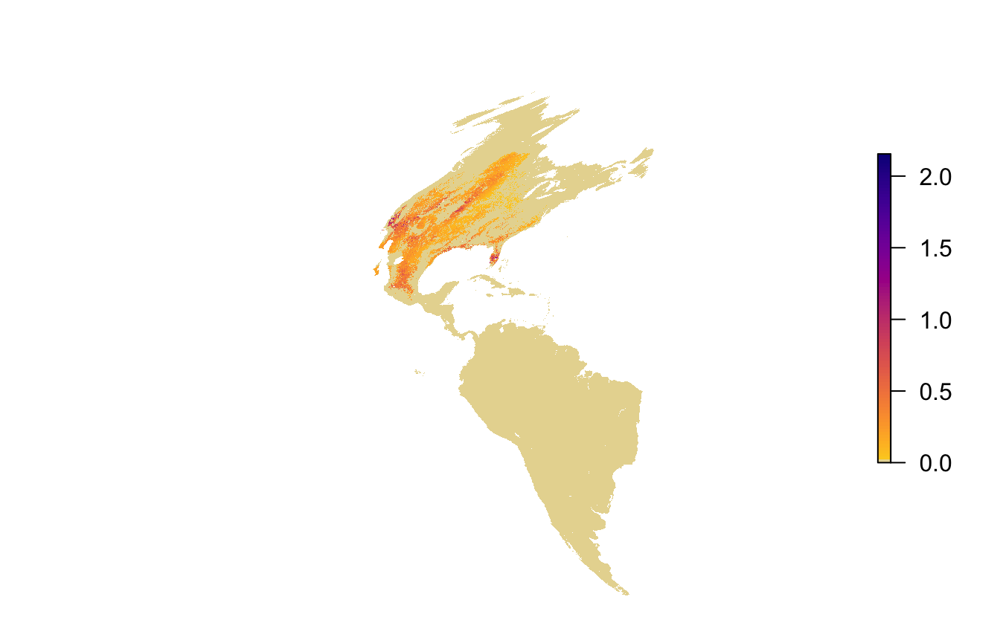
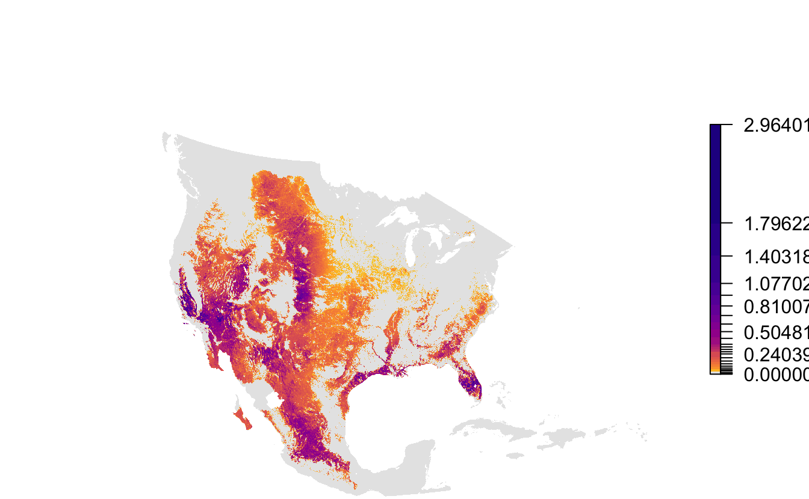

Chapter 3 Mapping
These raster layers are provided for the entire Western Hemisphere in a sinusoidal equal area projection. This format ensures consistency across the full set of Status and Trends species. Let’s map a quick map of the May 17 abundance data to see what it looks like.
par(mar = c(0, 0, 0, 0))
plot(abd[[20]], axes = FALSE, box = FALSE,
col = abundance_palette(100, season = "weekly"),
maxpixels = ncell(abd))
Notice the extreme distortion in the continents, that most of this map is taken up by areas where the species doesn’t occur, and that there isn’t much resolution in the color palette in areas where it does occur. To address this, each Status and Trends data package comes with a set of parameters suitable for mapping the data for that species. Let’s reproduce the above map using the provided extent, projection, and legend bins.
# load mapping parameters
map_pars <- ebirdst::load_fac_map_parameters(sp_path)
# crop and reproject abundance raster
abd_proj <- abd[[20]] %>%
crop(map_pars$fa_extent_sinu) %>%
projectRaster(crs = map_pars$custom_projection)
# map
par(mar = c(0, 0, 0, 0))
pal <- abundance_palette(length(map_pars$abundance_bins), season = 'weekly')
plot(abd_proj,
breaks = c(0, map_pars$abundance_bins),
col = c("#e6e6e6", pal),
axes = FALSE, box = FALSE,
maxpixels = ncell(abd_proj))